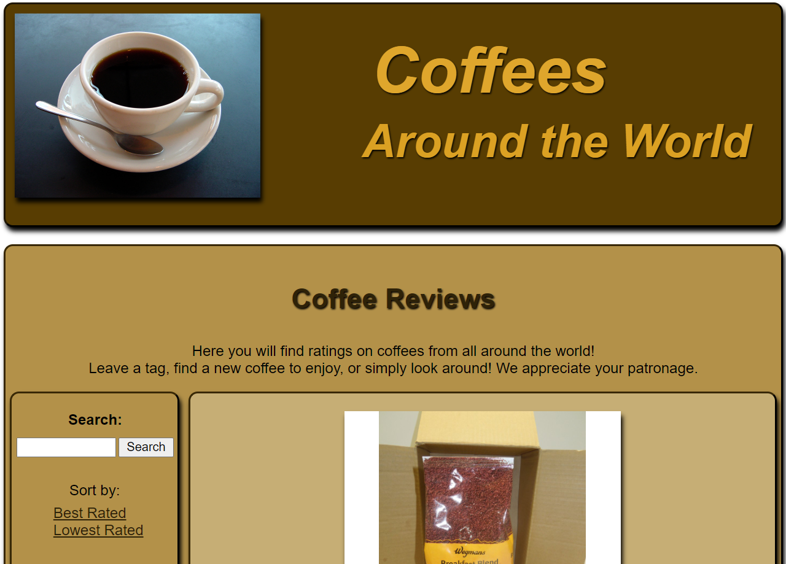

Coffees Around The World
This is a website that I constructed for INFO 2300, intermediate design and programming for web. The website is built in PHP, and integrates a SQL database to keep track of the coffee reviews. The coffee reviews can be edited, added and deleted, if logged in with the proper credentials. If you want to check out the site, you can log in using username: orentheman and password: monkey. You can find the site here.
Building this site was an incredibly challenging but worthwhile experience, and gave me the fundamental understanding of how to create interactive applications for the web.